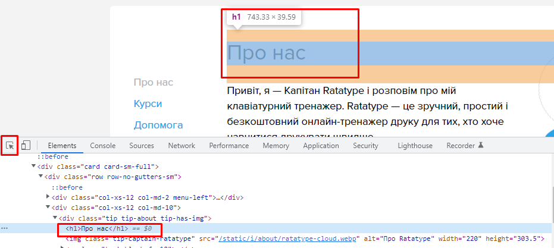

Chrome DevTools
Chrome DevTools — это набор инструментов, встроенных в браузер Google Chrome, для создания и отладки сайтов. С их помощью можно:
-
просматривать исходный код сайта,
-
отлаживать работу frontend: HTML, CSS и JavaScript.
Инструменты разработчика позволяют быстро отловить и исправить ошибки в разметке или в коде. С их помощью можно узнать, как построилось DOM-дерево, какие теги и атрибуты есть на странице, почему не подгрузились шрифты и многое другое.
Также DevTools позволяет проверять: сетевой трафик, быстродействие сайта и многое другое.
Как открыть инструменты разработчика
Открыть DevTools из браузера Google Chrome можно тремя способами:
-
Сочетанием горячих клавиш: Ctrl + Shift + I
-
В контекстном меню: на странице в любом месте кликнуть правой кнопкой мыши и выбрать «Просмотреть код».
Главное — не путать с «Просмотр кода страницы», эта опция покажет исходный код вне DevTools.
-
Через меню браузера: в правом верхнем углу нажать на три точки, в меню выбрать раздел «Дополнительные инструменты» и далее «Инструменты разработчика».
Настройки DevTools
Чтобы открыть Настройки DevTools, необходимо нажать шестеренку в правом верхнем углу Панели инструментов .

Тема интерфейса
Можно настроить инструменты разработчика и изменить их внешний вид — например, выбрать тёмную или светлую тему интерфейса.
Горячие клавиши
Также в настройках есть список горячих клавиш.
Советуем с ними ознакомиться - знание этих комбинаций очень ускорит работу. Если с английским языком проблемы, то как раз можно сменить язык на русский. Но, в целом, нужно привыкать работать с оригинальным интерфейсом на английском языке.
Изменение места закрепления DevTools в браузере
Можно изменить место расположения DevTools в браузере. По умолчанию панель отладчика DevTools расположена справа от окна браузера. Можно также расположить панель снизу, слева или открепить отладчик и работать с ним в отдельном окне.
Изменение места, в котором размещены DevTools в окне браузера:
-
Нажмите три вертикальных точки вверху справа от шестеренки "Настройка" и управление DevTools. Затем в выпавшем окне выберите вариант макета:
-
Открепить в отдельное окно

-
Расположение слева

-
Расположение снизу

-
Расположение справа

ВКЛАДКИ DevTools
Elements
С помощью вкладки Elements можно отслеживать элементы и их свойства на странице, можно редактировать стили и проверять вёрстку на переполнение. Здесь отображается весь HTML- (слева) и CSS-код (справа) открытой страницы.
Как получить информацию об элементе
Есть три способа получить информацию о любом элементе на странице:
- Через инспектор
- Поиск по элементам
- Визуальный поиск
Через инспектор
Способ удобен, если вы точно видите элемент и можете кликнуть по нему правой кнопкой мыши. Выберите Inspect или «Посмотреть код». Заодно сразу откроется панель разработчика. Нужный элемент будет подсвечен серой полосой.

Поиск по элементам
При открытом отладчике нажимаем Ctrl+F, и внизу появится окно поиска по тегу, атрибуту, классу или текстовому содержимому элемента.
Введём, например, часть текста, и увидим нужный элемент в коде:
Визуальный поиск
При открытом отладчике открываем режим визуального поиска (нажимаем квадратик со стрелкой в левом верхнем углу консоли). Затем находим нужный элемент и кликаем по нему.
